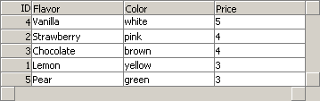

This section describes how the backend interaction of the grid is handled. It describes how the grid handles incoming data and how it's returned. First the generic implementation will be described then a few examples, created in some of the most common languages for serverside web development, will be presented and described.
Unlike many of our other components here at WebFX, this one is pretty useless without some kind of server interaction. It really doesn't start to shine until you got the interaction in place, once the grid is populated with information and whatever changes made are reflected upon the original data.
As we have previously discussed briefly in the usage section, the grid object is initialized by calling the WebFXGrid constructor with either two arguments indicating the desired number of rows and columns, or by passing a data structure as the first and only argument. When using the grid with a backend I've found the second method to be more convenient, generate the string in the appropriate formated on the serverside and simply include it into the document. For example, to generate such a string from a table named 'IceCream' using perl, the code would look somehting like this.
use DBI; use Strict; # Connect to database and execute query my $dbh = DBI->connect($dbSource, $user, $pwd, \%attr); my $sth = $dbh->prepare(" SELECT IceCreamID, Flavor, Color, Price FROM IceCream ORDER BY Flavor; "); $sth->execute(); # Create strings with a opening bracket my $ids = "["; my $str = "["; # Loop around all rows while ($data = $sth->fetchrow_hashref()) { # Append row to string $ids .= $data->{'IceCreamID'} . ","; $str .= "['" . $data->{'Flavor'} . "','" . $data->{'Color'} . "','" . $data->{'Price'} . "']," ; } # Remove trailing comma chop($ids); chop($str); # Append closing bracket $str .= "]"; $ids .= "]"; # Disconnect from database $dbh->disconnect(); # Send response print "Content-type: text/javascript\n\n"; print "var gridData = " . $str . ";\n"; print "var gridRowIds = " . $ids . ";\n";
Running the script above would generate a result similar to the one below (I've added a linebrak after each row, as well as some indentations to make it easier to read).
var gridData = [ ['Vanilla', 'white', '5'], ['Strawberry', 'pink', '4'], ['Chocolate', 'brown', '4'], ['Lemon', 'yellow', '3'], ['Pear', 'green', '3'] ]; var gridRowIds = [4,2,3,1,5];
Using this data we can generate a grid such as the one pictured below.

For more in-depth examples using perl, c++ and java please see the corresponding section.
Now that we can populate the grid with information provided by the server it's time to
focus on how replicate the changes made by the client back to the server. This requires a
working client to server flow. Instead of using a fancy xml based communications api, such
as soap, this component uses standard http requests as it's transmission protocol and sends
the grid data row-by-row separating columns by commas. To reduce the amount of traffic
required only the changes since the grid was populated, or since the last time changes
where saved, are sent back to the server. To perform a save operation call the method
dump on the grid object. This will return a complete uri that can be used
directly to perform a http GET operation.
Now let's see how the actual request string is built up, so we can parse it
at the sever side.
As mentioned above the grid data is sent row-by-row and each row is sent
as a http request parameter, identified by the row id. For example, if
a row with the id of 4 was modified a parameter similar to this would be
used 4=rowData, where rowData is a string containing the
values of all updated columns. The format of this string resembles the
way arrays are initialized in javascript (think of the row as array and
all cells as the array elements), columns are separated by commas
and the entire string is encapsulated in square brackets like this
[col0,col1,col2,...,colN]. All values, regardless of
data type, has to be quoted using single quotation marks, and to indicate
that a column has not been updated it's value is simply omitted.
Look at the data from the 'Server -> Client' example (the one with
all the flavors) and imagine that we update the vanilla row and
set the color to 'cream' and the price to 6. The parameter that would be
generated for such operation would look like this
4=[,'cream','6']. Notice that the first parameter was
omitted, since it was not updated. If multiple rows are updated multiple
parameters will be added to the request string.
We've described the scenario where existing rows are updated, now it's time
to look at how to delete those rows, and how to create new ones. Let's start
with the later.
To create a new row simply substitute the row id, used as the key, with
the word new. So if a new row (the flavor Orange) was added to
the flavor example grid the parameter for that row would look like this
new=['Orange','orange','3'].
When an existing row is deleted the letter d will be sent as the rowData,
like this 3=d.
To keep track of all updated rows a parameter named rows is also added to the
query, this parameter holds a square bracket encapsulated comma separated list
of the id's for all updated and deleted rows, but not for new rows, since those
does not yet have an id. The example below shows a complete update request, as
it would be generated by the dump function. It combines all of the
examples above. (Where sample.pl?action=save is whatever the baseUri has been
set to, using the setBaseUri(uri) method).
sample.pl?action=save&rows=[4,3]&4=[,'cream','6'] &3=d&new=['Orange','orange','3']
This string can either be used directly as is to perform a GET operation, like this
document.location.replace(gridObject.dump()) (a hidden iframe, the
download behavior or XML Extras could be used to perform this operation in the
background). While this is suitable for most scenarios it does not work with large
amounts of data, for such cases the string has to be parsed and a form has to be
generated and submitted using the POST http method.
History & Introduction
Usage
API
Backend - Introduction
Backend - Perl (cgi/mod_perl)
Backend - C++ (cgi/isapi)
Backend - Java (servlet)
Demo
Download